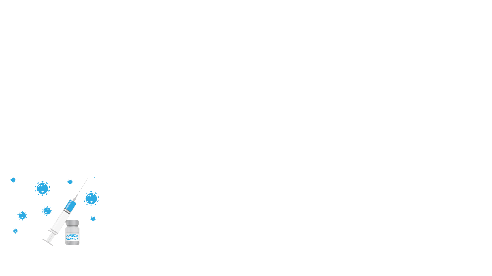
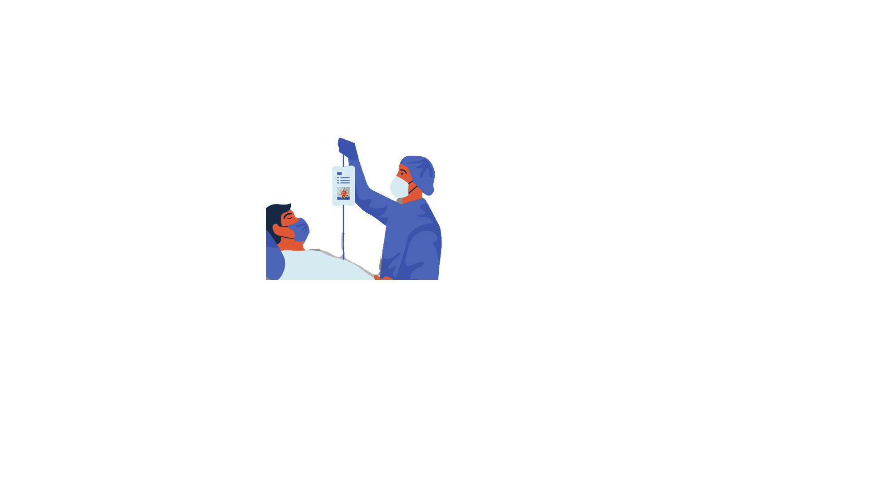
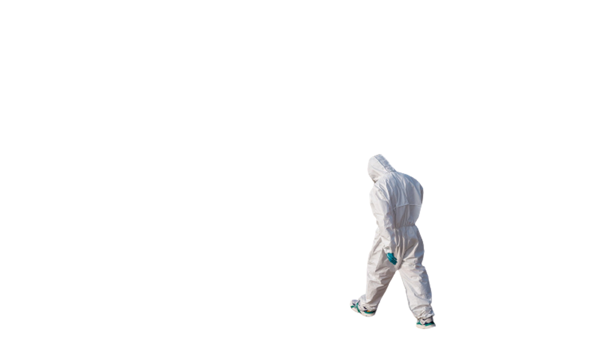
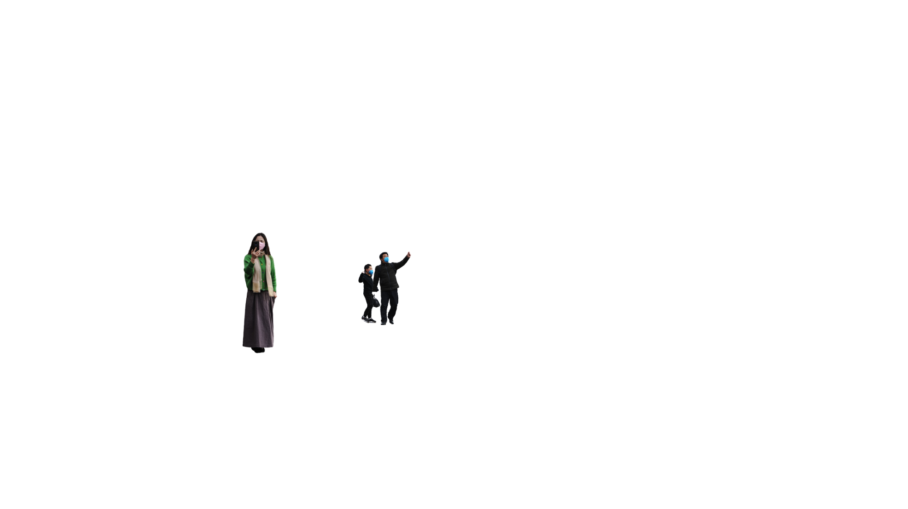

後疫情時代的生活與未來
新聞所碩一／郭上瑩
2019年11月，中國武漢爆出不明原因肺炎。短短2個多月，全球「COVID-19」確診病例就已破萬，為本世紀前所未見的疾速傳播。從疫情中心點也從中國的「鎖國防疫」開始，逐漸演變成近代規模最大的一場全球隔離行動。

在新型冠狀病毒疫情的肆虐下，全球各國都面臨了口罩、呼吸器等醫護用品的短缺。許多國家對口罩出口採取管制措施，一度使全球「口罩荒」問題加劇。由於現在是全球化時代，只要世界疫情沒有平息，疫情隨時有可能會捲土重來，因此疫苗的普遍施打至關重要。
自2020年12月8日英國人接種了第一劑的COVID-19疫苗後，到2022年1月，全球已有200多個地區開始接種，總施打劑逾92億劑。隨著病毒持續變種，也已有國家開始了第四劑疫苗的施打。

COVID-19疫情嚴重影響既有的醫療服務體系，醫院內的群聚接觸感染風險，不僅降低民眾就醫意願，也造成部分醫護人員選擇退出第一線醫療服務。為因應疫情帶來的衝擊，許多強化醫病社交距離的診療、護理服務應運而生因而發展，包含透過線上醫療以分攤線下就醫需求，以及藉由遠距生理監控、機器人等方式減少醫病接觸機會。
2021年5月中旬，台灣也爆發了COVID-19社區感染，宣布三級警戒，民眾在家上班或上課變成了生活常態。全球數以百萬計的人為了防疫居家辦公、上課，導致家用網路流量暴增，網速緩慢，甚至網路當機的狀況頻出，考驗著現代網路基礎設施的承受能力。如何讓線上會議能擁有更佳的環境，在防疫的同時也維持工作機能以及教學品質，相關產業的需求與機會也成為疫情時代的一大熱點。


隨著疫苗施打普及，全球航空交通已逐漸開放。然而在2020年入冬之後，四種變種病毒莫名竄起。由於當時疫情延燒將近一年，全球確診人數已經突破四千萬人，加上未統計數目，甚至要再乘以十倍。由此試想，地球上有破億的人口曾經染疫，代表大量的人類身上帶有中和抗體來對付新冠病毒。
研究顯示，面對變種病毒的免疫逃脫，只要疫苗能誘發T細胞免疫，就能基本保護身邊的危險族群，減少重症與死亡。因此，讓每個人都接種兩劑有效疫苗，是短期內必須達成的目標。如果要進一步提高保護，也可以使用補充劑的方式，接種第三劑疫苗，讓人體內的抗體保持更高的濃度，可望有效預防變種病毒，使各國逐步解封。